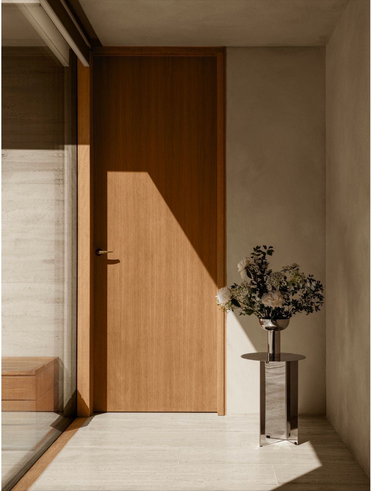
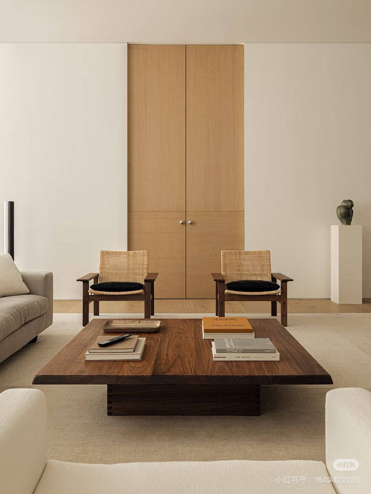
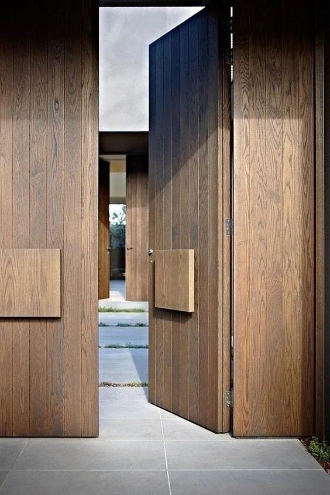
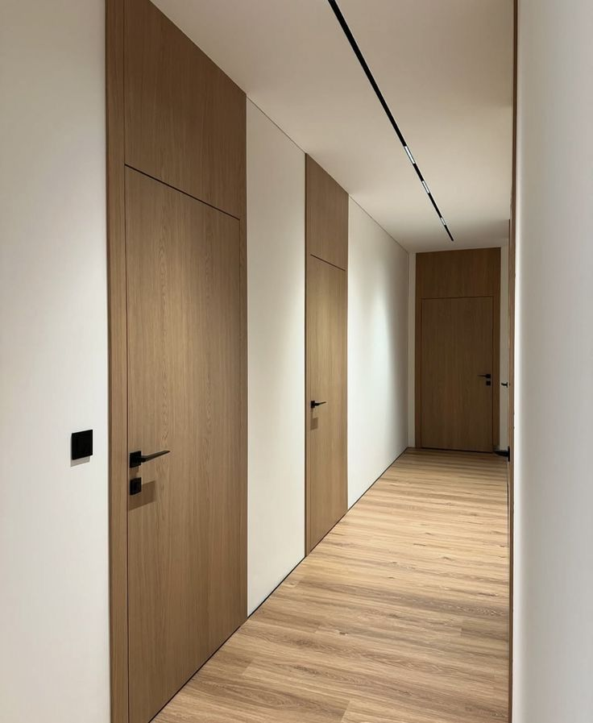
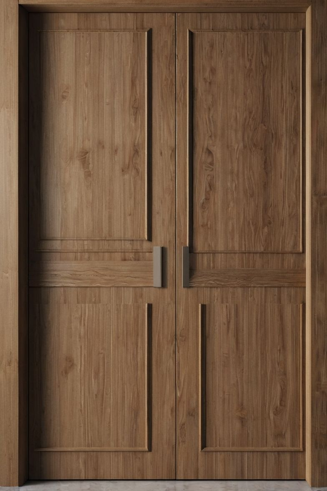
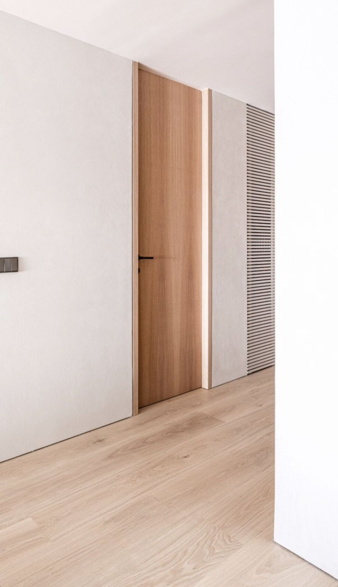
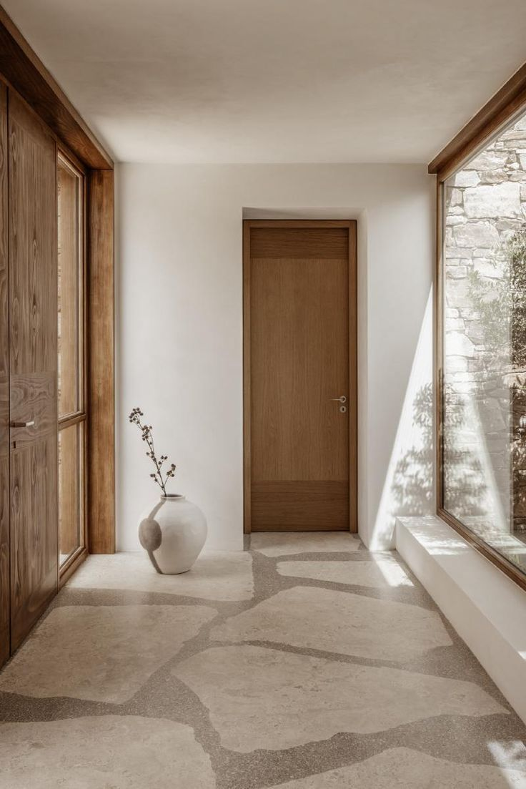
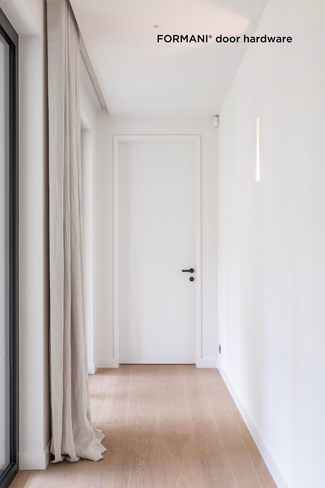
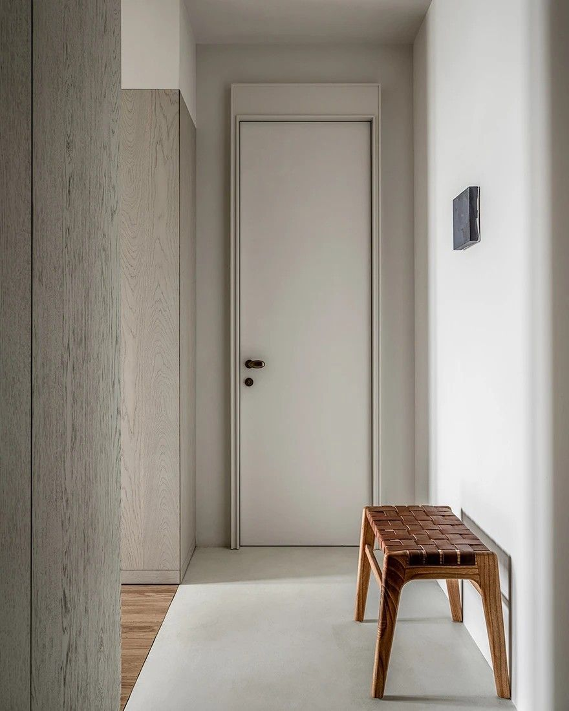

Fábrica de aberturas de madera · Córdoba, desde hace 40 años





Mové el cursor para verla de todos lados
Desde 1985
Relevamos la obra, diseñamos cada pieza y la fabricamos en Córdoba, con madera de bosques reforestados. De principio a fin, bajo un marco firme.
01 · Viviendas familiares
Puertas de ingreso e interiores a medida, relevadas en obra. Consultanos con el plano en la mano: llegamos con tiempo y sin apuro.
Ver viviendas familiares02 · Grandes obras
Más de 145 entregas por mes, condominios terminados y logística a todo el país. Consultanos al armar el pliego.
Ver grandes obras03 · Inversores
La línea Pre-diseñada como decisión segura: costo y plazo previsibles por unidad. Consultanos al definir el proyecto.
Ver inversores
Catálogo
Proyectos
La fábrica
Madera de bosques reforestados, 80% de energía solar y una fábrica que no desperdicia. Cuarenta años perfeccionando procesos con un equipo que entiende el material.


